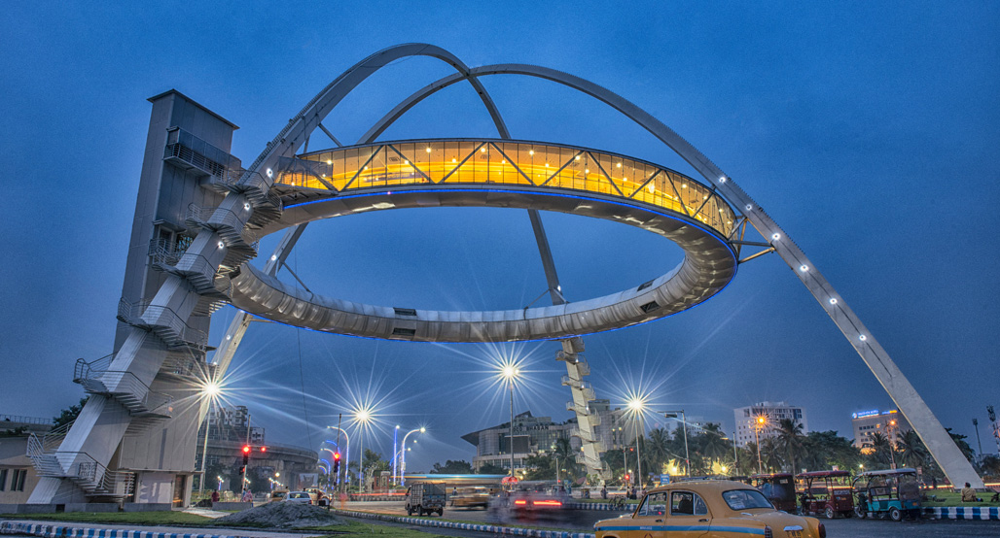

Bishwa Bangla Gate
it is made in 2014.It Is located In kolkata. it is an arc monument in the city of kolkata,west bengal. it is built by (HIDCO) on bishwa bangla sarani at narkelbagan,mew town. it also houses a restaruant.at one time 72 people can sit in the restaruantbut
now it has been changed to 50 people.
click here to explore more